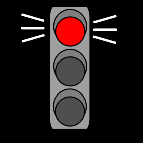
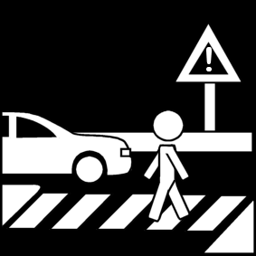
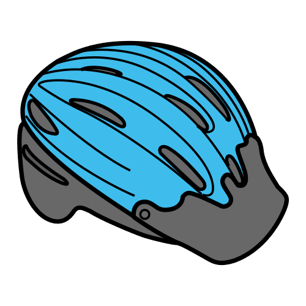
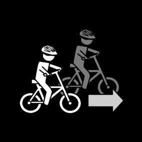
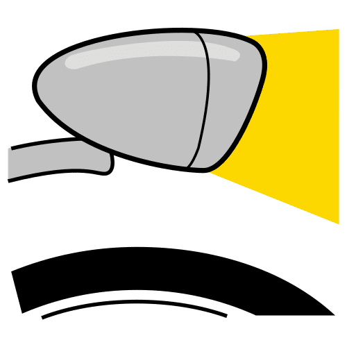

Web-projekti Study Group 7
Etusivu
(current)
Tietoja
Tietovisat
Eläinvisa
Lintuvisa
Luontovisa
Maantietovisa 1
Maantietovisa 2
Urheiluvisa
Liikennesääntövisa
Muut sivut
Jyrin matikkapeli
Liikennesääntövisa
Teksti
© Estormiz, CC0,
Wikimedia Commons
Kysymykset:

© Sclera, CC BY-NC-SA 3.0,
Papunet Kuvapankki
1. Mitä tarkoittaa punainen valo liikennevaloissa?
Saat juosta tien yli.
Pitää pysähtyä ja odottaa vihreän valon syttymistä.
Saat ylittää tien, jos ei näy autoja.
Vastaus 1:

© Sclera, CC BY-NC-SA 3.0,
Papunet Kuvapankki
2. Mitä teet, kun aiot ylittää suojatien ja näet auton lähestyvän?
Juokset äkkiä tien yli, vielä ehdit!
Katsot molempiin suuntiin ja lähdet ylittämään.
Odotat kunnes auto pysähtyy, katsot molempiin suuntiin ja varmistat, että tien ylitys on turvallinen.
Vastaus 2:

© Sergio Palao, CC BY-NC-SA 3.0,
Papunet Kuvapankki
3. Missä kypärän pitää olla pyöräillessä?
Kotona.
Ohjaustangossa roikkumassa.
Päässä huolellisesti kiinnitettynä.
Vastaus 3:

© Sclera, CC BY-NC-SA 3.0,
Papunet Kuvapankki
4. Mitä on hyvä tehdä, jos aikoo ohittaa pyörällä?
Varoitat soittamalla soittokelloa ja varmistat, että ohittaminen on turvallista.
Varoitat soittamalla kissankelloa.
Et tee mitään, lähdet vain ohittamaan.
Vastaus 4:

© Sergio Palao, CC BY-NC-SA 3.0,
Papunet Kuvapankki
5. Pitääkö pyörässä olla valot?
Ei.
Joo, etuvalo.
Joo, etu- ja takavalot.
Vastaus 5:
© Sergio Palao, CC BY-NC-SA 3.0,
Papunet Kuvapankki
© Sclera, CC BY-NC-SA 3.0,
Papunet Kuvapankki
© Sclera, CC BY-NC-SA 3.0,
Papunet Kuvapankki
Tarkista
Yritä uudelleen
×